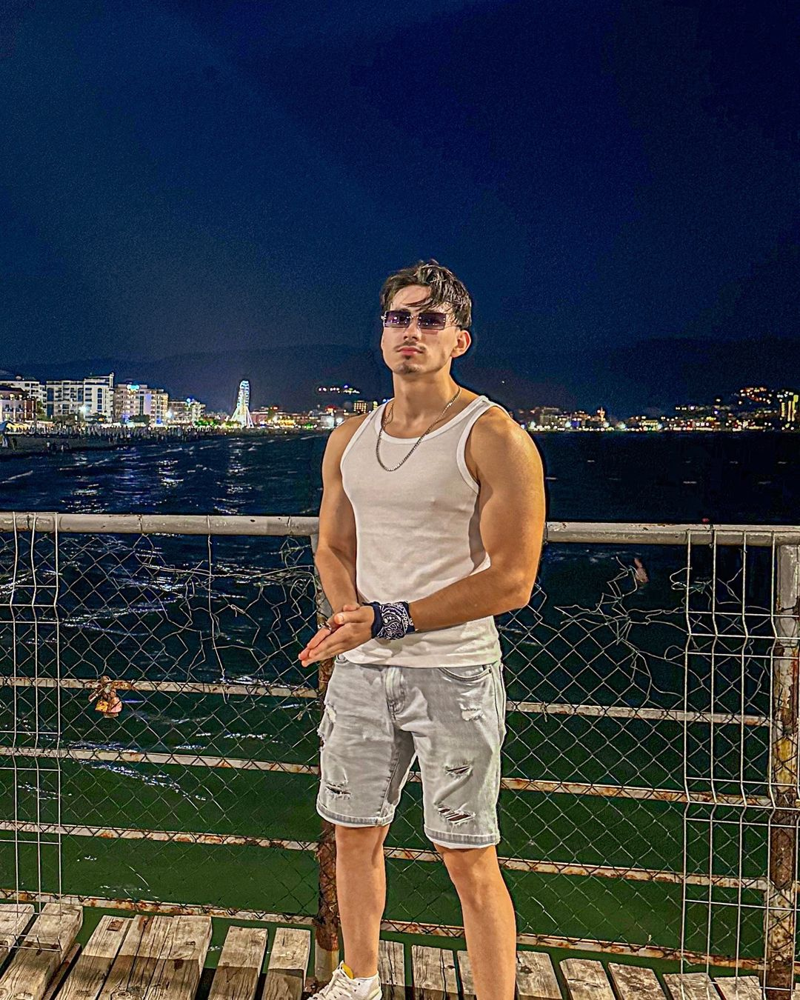
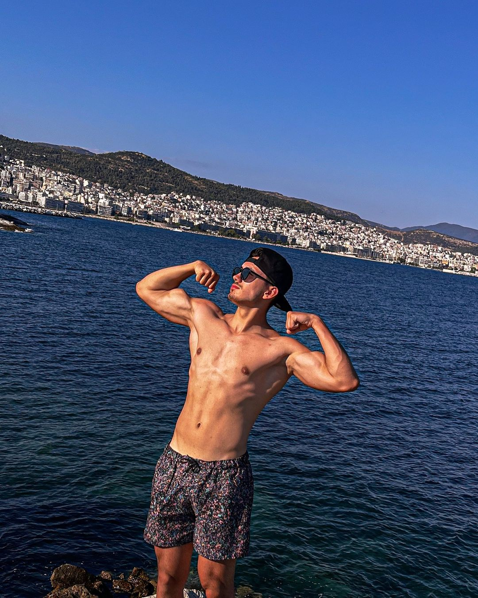
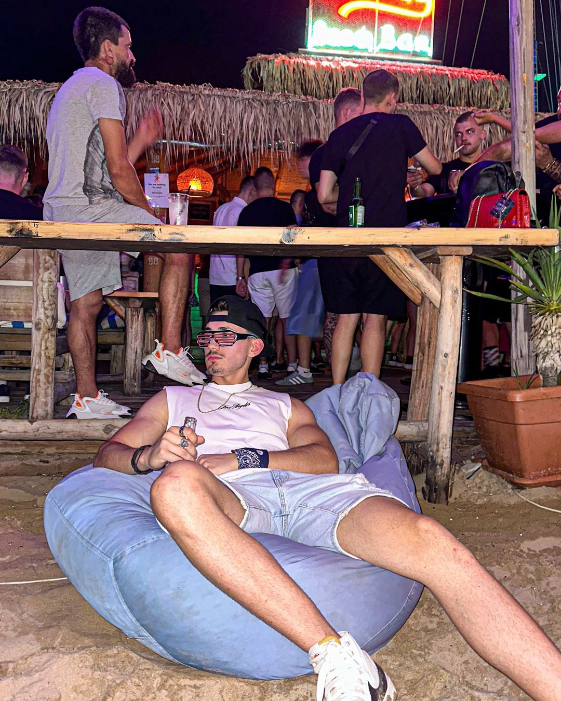
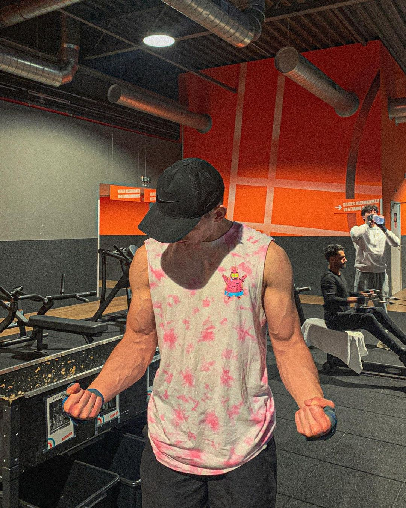
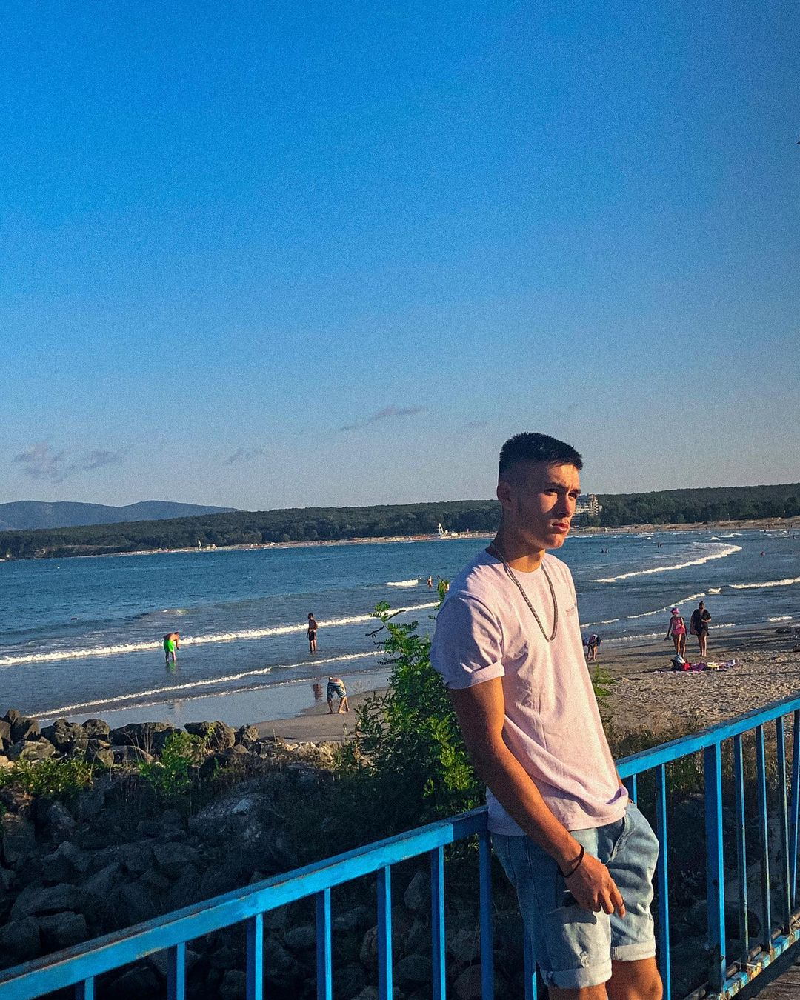
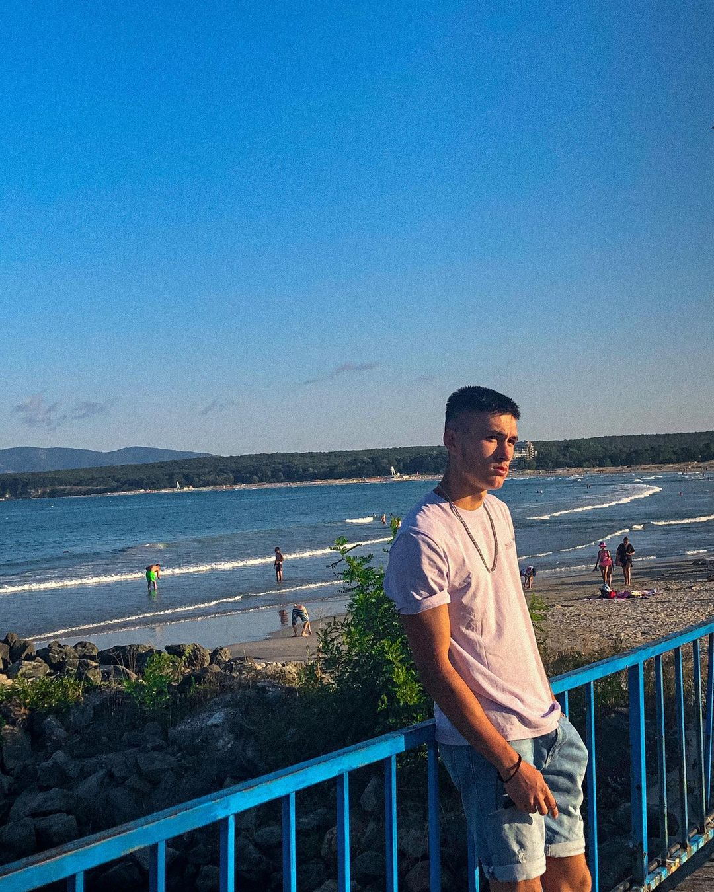

Over mij
    

Ik ben Ersin Nedret Behched, woonachtig in Menen, en ik spreek vloeiend Turks, Bulgaars, Engels, Nederlands en beetje Frans.
Ik ben altijd in voor avontuur en geniet volop van het leven. Reizen, nieuwe plekken ontdekken, feesten en party's, dat is helemaal mijn ding.
Daarnaast ben ik dol op trainen om fit te blijven en hou ik ervan om actief bezig te zijn. Of ik nu op reis ben of in de sportschool, ik haal altijd het beste
uit elke dag.
Je kunt me bereiken op mijn gsm nummer 0484 350 445 of via
e-mail: ersin_red@abv.bg.